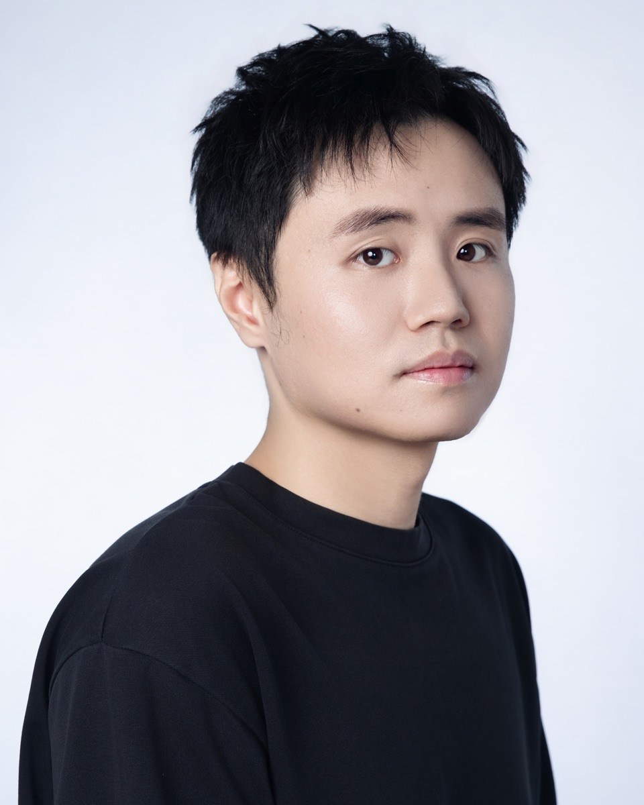

Columbia Business School
MBA, Strategy & AI, May 2028
Membership: Management Consulting Association, Tech Club, AI Club, Greater China Society (AVP), Golf Club
Yuchen (Shawn) Sun
I'm an MBA student in Strategy & AI at Columbia Business School. Before this, I spent four years at BMO building forecasting models, analytics products and AI-agent workflows.
Off the clock: snowboarding, Formula 1, golf and a lot of Real Madrid.

Three schools, two countries.
MBA, Strategy & AI, May 2028
Membership: Management Consulting Association, Tech Club, AI Club, Greater China Society (AVP), Golf Club
Master of Quantitative Financial Risk, June 2022
Leadership: Class Representative of Community
Bachelor of Mathematics, Finance, April 2020
Honors & Leadership: Graduated with Distinction, VP of UW Ski Club
Mostly banks, models and getting people to actually use them.
Top 3 Bank in Canada
Workflow & AI Transformation
Analytics Product Development & Management
The rest of the story, including the fun part.
Ice Condo, Board Officer, 2022-2024. Championed an Airbnb partnership generating $1M+ annually for maintenance and security at Canada's largest condo (1,350 units) by mobilizing ~70 owners